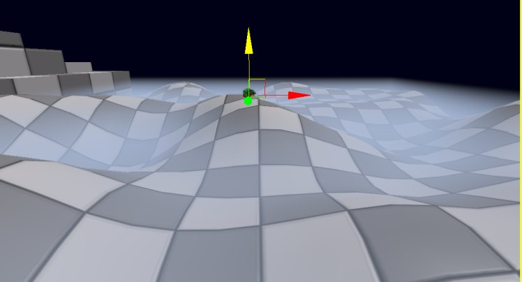

UDN
Search public documentation:
FogVolumes
日本語訳
中国翻译
한국어
Interested in the Unreal Engine?
Visit the Unreal Technology site.
Looking for jobs and company info?
Check out the Epic games site.
Questions about support via UDN?
Contact the UDN Staff
中国翻译
한국어
Interested in the Unreal Engine?
Visit the Unreal Technology site.
Looking for jobs and company info?
Check out the Epic games site.
Questions about support via UDN?
Contact the UDN Staff
Fog Volumes
Document Changelog: Created by Daniel Wright.
- Fog Volumes
- Versions
- What are Fog Volumes?
- Setup methods
- Quick Automatic Setup
- Automatic Setup Details
- Quick Manual Setup
- Manual Setup Details
- Density Functions
- Additional Settings
- Fog Volume Actor
- Fog Volume Material
- Interaction with Height Fog
- Transparency in Fog Volumes
- Performance Implications
- Best Practices
Versions
What are Fog Volumes?
Setup methods
Quick Automatic Setup
- Place a FogVolumeConstantDensityInfo (Found under Generic Browser->Actor Classes->Info->FogVolumeDensityInfo)
A constant density fog volume after being placed.
Automatic Setup Details
- Changing DrawScale3d on the fog volume info away from 1.0 will cause the AutomaticMeshComponent to no longer match up with the size of the fog volume info.
- When you place a new spherical fog volume info, DrawScale X, Y and Z are setup such that the AutomaticMeshComponent tightly bounds the fog volume info.
- You can control the position and scaling of the AutomaticMeshComponent relative to the fog volume info by changing AutomaticMeshComponent->PrimitiveComponent->Scale, Translation, etc.
- When you create a new fog volume info, a new material instance will be created in the level and automatically applied to the AutomaticMeshComponent. This is set as FogMaterial. If you have a material selected in the Generic Browser, that material will be used as the parent, otherwise EngineMaterials.FogVolumeMaterial will be the parent. You can replace this new material instance with any fog volume compatible material of your choice, but be sure to change FogMaterial on the info actor instead of changing the actual Materials array on the AutomaticMeshComponent.
- The SimpleLightColor property of the fog volume info is a convenience property and will be set as the 'EmissiveColor' vector parameter of the AutomaticMeshComponent's material instance. If you override the material instance and it does not use an 'EmissiveColor' vector parameter, SimpleLightColor will no longer function.
- The AutomaticMeshComponent is not selectable in the editor unlike the meshes used with the manual method, you have to select the fog volume info actor itself instead.
- The AutomaticMeshComponent will have all collision, lighting and shadowing flags set appropriately.
Quick Manual Setup
- Place a closed static mesh
- Place a FogVolumeConstantDensityInfo (Found under Generic Browser->Actor Classes->Info->FogVolumeDensityInfo)
- Clear the newly placed fog info's AutomaticMeshComponent
- Add the static mesh to the info actor's FogVolumeActors array.
- To do this you first need to open the properties of the FogVolumeConstantDensityInfo you placed, expand DensityComponent
- Click the lock at the top left of the property window
- Select the static mesh in the viewport
- The property window should still show the info actor, since we locked it.
- Click the + to add an entry to the FogVolumeActors array
- Now click the 'use selected actor' button on the new entry.
Set the static mesh in the FogVolumeActors array. At this point the static mesh should be rendered as a fog volume.
Manual Setup Details
- When you add a new FogVolumeActors entry, it will get setup with default fog volume settings, which disable collision, lighting and shadowing. The new FogVolumeActor's mesh component material will also be changed to use EngineMaterials.FogVolumeMaterial. To override this set the material on the target FogVolumeActor entry, FogMaterial is not used for the manual setup. Note: Due to a limitation of the property system, currently the defaults will be set for all entries in the FogVolumeActors array when you add a new entry! It is best to set all the entries in the FogVolumeActors array FIRST and then set their materials as you want.
- Using the manual setup allows you to have multiple meshes associated with a single fog volume info, and it allows you to animate the info or meshes separately. However it can be tedious to setup and animate multiple parts, in which case an automatic setup would be easier.
Density Functions
FogVolumeConstantDensityInfo
This is a density function that has the same density everywhere, which is set through the Density variable.A cube rendered with the constant density function. The location of the fog info actor is irrelevant because the density is constant everywhere.
FogVolumeLinearHalfspaceDensityInfo
This density function is defined by a plane and a linear density coefficient. The halfspace on one side of the plane will be in fog. This plane can be rotated and placed arbitrarily by rotating and moving the info actor. The density in this function increases linearly with the distance from the plane, so the density is 0 on the plane and at a distance of 1 it becomes PlaneDistanceFactor. The linear density ensures that the halfspace never forms a hard edge, even when the camera is in the plane. The linear halfspace density function bounded by a cube mesh. Density starts at 0 at the plane and increases away from the plane, which is oriented in the xy plane in this example, but can be used in any orientation.
FogVolumeSphericalDensityInfo
The spherical density function has a maximum density of MaxDensity at the center, and the density falls off quadratically to 0 at the radius of the sphere, giving it smooth edges. The center of the sphere is defined by the info actor's position, and scaling the info actor will scale the radius.The Spherical density function, which has smooth edges. It is bounded by a mesh which is not visible in the first picture because it doesn't clip the sphere. In the second picture the mesh clips the sphere. A preview component shows the extent of the sphere density function in wireframe.
Additional Density Functions
If these density functions are not sufficient to create the falloff effect you want, first try to manipulate the material. For example, if you want softer edges, try using fresnel in the fog volume material on a sphere. The catch is that only the backfaces of the fog volume are rendered, so instead of a traditional fresnel node you need to mirror the normal to face toward the viewer. Additional density functions can also be added in code.Additional Settings
Properties of a FogVolumeSphericalDensityInfo.
bEnabled
Use this property to enable or disable the fog volume.StartDistance
Distance from the viewer at which fog should start, in world units. This is currently unsupported with the linear halfspace density function.Density, PlaneDistanceFactor, MaxDensity
These control the fog volume density for each density type. A value of 0 for any of these is functionally the same as bEnabled=False.Fog Volume Actor
Fog Volume Material
- Lighting model is Unlit
- Blend mode is one of the translucent modes (Translucent, Additive or Modulative)
- There must be an emissive input
- bUsedWithFogVolumes must be checked. Note that this flag is exclusive with the other usage flags, once it is set you can only use the material on fog volumes.
A minimal fog volume material setup. Opacity defaults to 1 so it does not need to be specified. The emissive input of the material is the fog volume color, the opacity input scales the fog contribution, which is calculated from the distance through the fog volume.
Material limitations
Only the backfaces of the fog volume actor are drawn when applying the material, which is necessary so the fog volume will still be drawn when the camera is inside it. This has implications for texturing: the texture will only be applied to the back of the fog volume mesh. See the Volumetric Lighting Guide for volumetric lighting tricks using textures. This also affects other mesh attributes such as the normal, reflection vector, etc.Interaction with Height Fog
Transparency in Fog Volumes
Set the ApproxFogLightColor member so that transparent objects intersecting the fog volume will be fogged correctly. Fog on Transparent objects intersecting Fog Volumes has the following limitations:
- Fog is calculated per-vertex. To minimize the resulting artifacts, increase the tessellation of the transparent meshes and avoid large translucent meshes.
- Fog transitions due to clipping from the fog volume mesh can't be represented. Instead, the axis aligned bounding box of the fog volume mesh is used to clip the fog. Fog transitions from the fog function (ie the sphere edges in the Spherical Density Function) are calculated correctly.
- The most fog interactions that can be approximated on a single transparent object is 4 height fog layers and one fog volume.
- Transparent materials using the modulative blend mode are not fogged at all, by either height fog or fog volumes.
- Transparent materials applied to skinned meshes (Skeletal meshes or Skeletal mesh decals) will not be fogged by fog volumes.
Performance Implications
- The number of overlapping fog sheets is small
- The camera can't ever go into the fog, or you don't mind the fog fading out when you would have been inside of it
- Translucency doesn't intersect the fog, or the artifacts are not noticeable